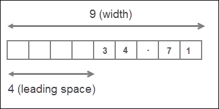
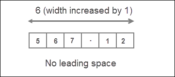
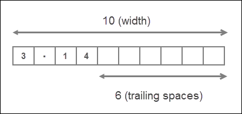
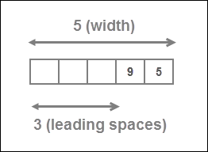
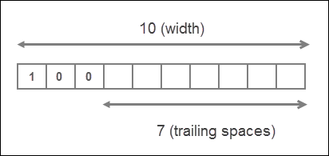

Numbers in Python
Last updated on September 17, 2020
Numbers in Python #
In Python, Numbers are of 4 types:
- Integer.
- Floating Point or Real Numbers.
- Complex Numbers.
- Boolean.
Integers or int for short are the numbers without decimal point. for example, 100, 77, -992 are int but 0.56, -4.12, 2.0 are not.
Floating point or real or float are the numbers which have decimal point. For example, 1.2, 0.21, -99.0 are float but 102, -8 are not. We can also write float point number using scientific notation. The numbers written in the form a x 10^b is known as scientific notation. Scientific notation is quite useful for writing very small or very large numbers. For example, float 0.000000123 can be written succinctly in Scientific notation as 1.23 x 10^-7. Python uses special a syntax to write numbers in Scientific notation. For example, 0.000000123 can be written as 1.23E-7. The letter E is called exponent and it doesn't matter whether you use e or E.
Complex numbers are the numbers which we can't represent on a number line. A Complex number is of the form a + ib, where a is the real part and bi is the imaginary part. For example, 2 + 3i is complex number. Python uses a special syntax for complex numbers too. A integer or float with trailing j is treated as a complex number in Python, so 10j, 9.12j are complex numbers.
1 2 3 4 5 6 7 8 9 10 | >>>
>>> type(5) # an integer
<class 'int'>
>>>
>>> type(3.4) # a float
<class 'float'>
>>>
>>> type(5j) # a complex number
<class 'complex'>
>>>
|
Note that 5j only represents the imaginary part of the complex number. To create a complex number with real and imaginary part, simply add a number to the imaginary part. For example, complex number 2 + 3i can be written in Python as 2 + 3j.
Boolean type is discussed later in this chapter.
Common Mathematical Functions #
Python provides following built-in function to help you accomplish common programming tasks:
| Function | What it does ? | Example |
|---|---|---|
abs(number) |
Returns the absolute value of the number. In other words, the abs() function just returns the number without any sign. |
abs(-12) is 12, abs(112.21) is 112.21. |
pow(a, b) |
Returns a^b. |
pow(2, 3) is 8, pow(10, 3) is 1000 |
round(number) |
Rounds the number to the nearest integer. | round(17.3) is 17, round(8.6) is 9 |
round(number, ndigits) |
Rounds the number to ndigits after decimal point |
round(3.14159, 2) is 3.14, round(2.71828, 2) is 2.72 |
min(arg1, arg2, ... argN) |
Returns the smallest item among arg1, arg2, ... argN |
min(12, 2, 44, 199) is 2, min(4, -21, -99) is -99 |
max(arg1, arg2, ... argN) |
Returns the largest item among arg1, arg2, ... argN |
max(991, 22, 19) is 991, max(-2, -1, -5) is -1 |
abs() function #
1 2 3 4 5 6 7 8 9 10 | >>>
>>> abs(-100) # absolute value of -100
100
>>>
>>> abs(291.121) # absolute value of 291.121
291.121
>>>
>>> abs(88) # absolute value of 88
88
>>>
|
pow() function #
1 2 3 4 5 6 7 8 9 10 | >>>
>>> pow(3, 3) # calculate 3^3
27
>>>
>>> pow(0.35, 2) # calculate 0.35^2
0.12249999999999998
>>>
>>> pow(9, -2) # calculate 9^-2
0.012345679012345678
>>>
|
round() function #
1 2 3 4 5 6 7 8 9 10 11 12 13 14 | >>>
>>> round(32.3) # round 32.3 to the nearest integer
32
>>> round(99.7) # round 99.7 to the nearest integer
100
>>> round(-5.23) # round -5.23 to the nearest integer
-5
>>>
>>> round(3.14159, 2) # round 3.14159 to 2 decimal places
3.14
>>>
>>> round(2.71828, 3) # round 2.71828 to 3 decimal places
2.718
>>>
|
max() and min() function #
1 2 3 4 5 6 7 8 9 10 11 12 13 14 15 16 17 | >>>
>>> max(1, 4, 100) # Find the largest among 1, 4 and 100
100
>>>
>>> max(-21, 4.5, 91.12) # Find the largest among -21, 4.5 and 91.12
91.12
>>>
>>> max(-67, -17, 0) # Find the largest among -67, 417 and 0
0
>>>
>>> min(0, -1.23e10, -9921) # Find the smallest among 0, -1.23e10 and -9921
-12300000000.0
>>>
>>>
>>> min(92, 6, -102) # Find the largest among 92, 6, -102
-102
>>>
|
Python's math module also provides some standard mathematical functions and constants. Recall that, to use math module we first need to import it using import statement as follows:
import math
The following table lists some standard mathematical functions and constants in the math module.
| Function | What it does ? | Example |
|---|---|---|
math.pi |
Returns the value of pi |
math.pi is 3.141592653589793 |
math.e |
Returns the value of e |
math.e is 2.718281828459045 |
math.ceil(n) |
Returns smallest integer greater than or equal to n |
math.ceil(3.621) is 4 |
math.floor(n) |
Returns largest integer smaller than or equal to n |
math.floor(3.621) is 3 |
math.fabs(n) |
Returns absolute value of x as float |
math.fabs(5) is 5.0 |
math.sqrt(n) |
Returns the square root of x as float | math.sqrt(225) is 15.0 |
math.log(n) |
Returns the natural log of n to the base e |
math.log(2) is 0.6931 |
math.log(n, base) |
Return the log of n to the given base |
math.log(2, 2) is 1.0 |
math.sin(n) |
Returns the sine of n radians |
math.sin(math.pi/2) is 1.0 |
math.cos(n) |
Returns the cosine of n radians |
math.cos(0) is 1.0 |
math.tan(n) |
Returns the tangent of n radians |
math.tan(45) is 1.61 |
math.degrees(n) |
Converts the angle from radians | math.degrees(math.pi/2) is 90 |
math.radians() |
Converts the angle from degrees to radians | math.radians(90) is 1.5707 |
math.pi and math.e constants #
1 2 3 4 5 6 7 | >>>
>>> math.pi
3.141592653589793
>>>
>>> math.e
2.718281828459045
>>>
|
math.ceil() and math.floor() functions #
1 2 3 4 5 6 | >>>
>>> math.ceil(3.5) # find the smallest integer greater than or equal to 3.5
4
>>> math.floor(3.5) # find the largest integer smaller than or equal to 3.5
3
>>>
|
math.fabs() and math.sqrt() functions #
1 2 3 4 5 6 7 8 9 10 11 12 13 | >>>
>>> math.fabs(2) # absolute value of 2 in float
2.0
>>>
>>> math.fabs(-53.3) # absolute value of -53.3
53.3
>>>>
>>> math.sqrt(9801) # square root of 9801
99.0
>>>
>>> math.sqrt(4.3) # square root of 4.3
2.073644135332772
>>>
|
math.log() function #
1 2 3 4 5 6 7 | >>>
>>> math.log(2) # find log of 2 to the base e
0.6931471805599453
>>>
>>> math.log(2, 5) # find log of 2 to the base 5
0.43067655807339306
>>>
|
math.sin(), math.cos() and math.tan() functions #
1 2 3 4 5 6 7 8 9 10 | >>>
>>> math.sin(math.pi/2)
1.0
>>>
>>> math.cos(0)
1.0
>>>
>>> math.tan(45)
1.6197751905438615
>>>
|
math.degrees() and math.radians() function #
1 2 3 4 5 6 7 | >>>
>>> math.degrees(math.pi/2)
90.0
>>>
>>> math.radians(90)
1.5707963267948966
>>>
|
The is just a short list functions and constants in the math module, to view the complete list visit https://docs.python.org/dev/library/math.html.
Formatting Numbers #
Sometimes it is desirable to print the number in a particular format. Consider the following example:
python101/Chapter-05/simple_interest_calculator.py
1 2 3 4 5 6 7 8 9 10 11 12 13 14 15 | # Program to calculate the Simple Interest
#
# The formula for Simple Interest is
# si = p * r * t
# where si is the simple interest
# p is principal
# r is interest rate
# t is number of years
p = 18819.99 # principal
r = 0.05 # rate of interest
t = 2 # years
si = p * r * t
print("Simple interest at the end of 2 years $", si)
|
Output:
Simple interest at the end of 2 years $ 1881.9990000000003
Notice how money displayed in the output, it contains 13 digits after the decimal. This is very common problem when floating point numbers are printed after performing calculations. As the amount is currency, it makes sense to format it to two decimal places. We can can easily round the number to 2 decimal places using the round() function, but the round() function will not always give the correct answer. Consider the following code:
1 2 3 4 | >>>
>>> round(1234.5012, 2)
1234.5
>>>
|
We want to output 1234.50 not 1234.5. We can fix this problem using the format() function. Here is a revised version of the above program using format() method.
python101/Chapter-05/simple_interest_calculator_using_format_function.py
1 2 3 4 5 6 7 8 9 10 11 12 13 14 15 | # Program to calculate the Simple Interest
#
# The formula for Simple Interest is
# si = p * r * t
# where si is the simple interest
# p is principal
# r is interest rate
# t is number of years
p = 18819.99 # principal
r = 0.05 # rate of interest
t = 2 # years
si = p * r * t
print("Simple interest at the end of 2 years $", format(si, "0.2f"))
|
Output:
Simple interest at the end of 2 years $ 1882.00
The format() function is explained in the next section.
format() Function #
The syntax of the format() function is as follows:
format(value, format-specifier)
The value is the data we want to format.
The format-specifier is a string which determines how to format the value passed to the format() function.
On success format() returns a formatted string.
Formatting Floating Point Numbers #
To format floating point numbers we use the following format-specifier.
width.precisionf
The width is the minimum number of characters reserved for a value and precision refers to the number of characters after the decimal point. The width includes digits before and after the decimal and the decimal character itself. The f character followed by the precision represents that the format() function will output the value as floating point number. The character f is also known as type code or specifier. There are many other specifiers, as we will see.
By default, all types of numbers are right aligned. If the width is greater than length of the value then numbers are printed right justified with leading spaces determined by subtracting length of the value from width. On the other hand, if the width is smaller than the length of the value then the length of the width is automatically increased to fit the length of the value and no leading spaces are added
To make everything concrete, let's take some examples:
Example 1:
1 2 3 4 | >>>
>>> print(format(34.712, "9.2f"))
34.71
>>>
|

Here width is 9 characters long and precision is 2. The length of number 34.712 is 6, but since the precision is 2, the number will be rounded to 2 decimal places. So the actual length of value is 5. That means the width is greater than the length of the value, as a result value is right justified with 4 (9-5=4) leading spaces.
Example 2:
1 2 3 4 | >>>
>>> print(format(567.123, "5.2f"))
567.12
>>>
|

In this case, width is 5 and the actual length of the value is 6 (because the number will be rounded to 2 decimal places). So width is smaller than length of value, as a result, the length of the width is automatically increased to fit the length of the value and no leading spaces are added
We can also omit the width entirely, in which case it is automatically determined by the length of the value.
1 2 3 4 5 | >>>
>>> import math
>>> print(format(math.pi, ".2f"))
3.14
>>>
|
The width is commonly used to neatly line up data in columns.
Formatting Numbers in Scientific Notation #
To format a number in Scientific Notation just replace type code from f to e or E.
1 2 3 4 5 6 7 8 9 10 11 12 13 | >>>
>>> print(format(5482.52291, "10.2E"))
5.48E+03
>>>
>>>
>>> print(format(5482.52291, "5.2e"))
5.48e+03
>>>
>>>
>>> print(format(00000.212354, ".3E"))
2.124E-01
>>>
>>>
|
Inserting Commas #
Reading large numbers can be difficult to read. We can make them much more readable by separating them by commas (,). To use comma separator type , character just after width of format-specifier or before the precision.
1 2 3 4 5 6 7 8 | >>>
>>> print(format(98813343817.7129, "5,.2f"))
98,813,343,817.71
>>>
>>>
>>> print(format(98813343817.7129, ",.2f"))
98,813,343,817.71
>>>
|
If you just want to print the floating point number with commas(,) but without applying any formatting do this:
1 2 3 4 | >>>
>>> print(format(98813343817.7129, ",f"))
98,813,343,817.712906
>>>
|
Formatting Number as Percentages #
We can use % type code to format a number as percentage. When % is used in the format-specifier, it multiplies the number by 100 and outputs the result as a float followed by a % sign. We can also specify width and precision as usual.
1 2 3 4 5 6 7 8 9 10 11 12 13 14 15 16 17 18 19 | >>>
>>> print(format(0.71981, "%"))
71.981000%
>>>
>>>
>>>
>>> print(format(0.71981, "10.2%"))
71.98%
>>>
>>>
>>>
>>> print(format(52, "%"))
5200.000000%
>>>
>>>
>>>
>>> print(format(95, ".2%"))
9500.00%
>>>
|
Setting Alignment #
We have already discussed that by default, numbers are printed right justfied. For example:
1 2 3 4 5 6 7 | >>>
>>> import math
>>>
>>> print(format(math.pi, "10.2f"))
3.14
>>>
>>>
|
We can change the default alignment by using following two symbols:
| Symbol | Description |
|---|---|
> |
Output the value right justified within the specified width |
< |
Output the value left justified within the specified width |
Alignment symbol must come before the specified width.
1 2 3 4 | >>>
>>> print(format(math.pi, "<10.2f")) # output the value left justfied
3.14
>>>
|
Here we are printing the number left justified, as a result trailing spaces are added instead of leading spaces.

Note that the statement format(math.pi, ">10.2f") and format(math.pi, "10.2f") are same as right justified is the default format for printing numbers.
Formatting Integers #
We can also use format() function to format integers. Type codes d, b, o, x can be used to format in decimal, binary, octal and hexadecimal respectively. Remember that while formatting integers only width is allowed not precision.
1 2 3 4 | >>>
>>> print(format(95, "5d"))
95
>>>
|

1 2 3 4 | >>>
>>> print(format(4, "b")) # prints the binary equivalent of decimal 4
100
>>>
|
1 2 3 4 | >>>
>>> print(format(255, "x")) # prints the hexadecimal equivalent of decimal 255
ff
>>>
|
1 2 3 4 | >>>
>>> print(format(9, "o")) # prints the octal equivalent of decimal 9
11
>>>
|
1 2 3 4 | >>>
>>> print(format(100, "<10d")) # Left align the number within specified width
100
>>>
|

Load Comments